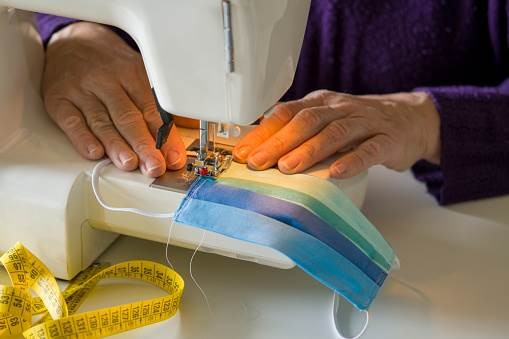

Sewing

Empower the Nation School's sewing program provides a thorough introduction
to essential sewing techniques and practices. You will learn
about different types of stitches and their appropriate uses, as well as
how to thread a sewing machine efficiently for smooth operation. The curriculum covers practical skills, including sewing buttons, zips, hems,
and seams, which are crucial for both garment construction and repair.
You'll also gain expertise in making alterations to modify existing
clothing to fit perfectly. Additionally, the program encourages creativity
by teaching you how to design and sew new garments, allowing you to transform your ideas into beautifully crafted pieces.
about different types of stitches and their appropriate uses, as well as
how to thread a sewing machine efficiently for smooth operation. The curriculum covers practical skills, including sewing buttons, zips, hems,
and seams, which are crucial for both garment construction and repair.
You'll also gain expertise in making alterations to modify existing
clothing to fit perfectly. Additionally, the program encourages creativity
by teaching you how to design and sew new garments, allowing you to transform your ideas into beautifully crafted pieces.